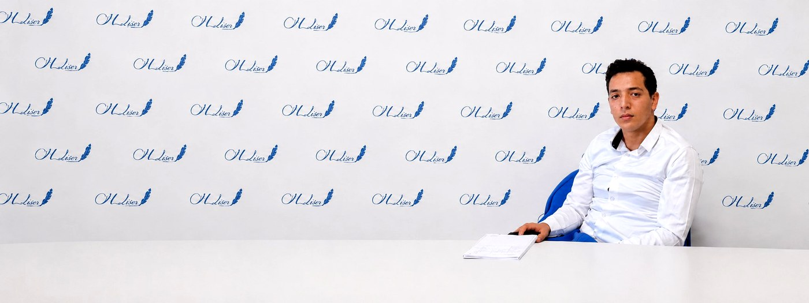

Doctorant en Droit · Tanger, Maroc
Droits de l'Homme, protection des réfugiés environnementaux, justice climatique et diplomatie internationale.
Sujet de thèse doctoral
Réfugiés environnementaux : défis de protection et étendue de la réponse internationale
اللاجئون البيئيون بين تحديات الحماية ومدى الاستجابة الدولية
Profil
Doctorant en droit à l'Université Abdelmalek Essaâdi, je consacre mes recherches à la situation juridique des réfugiés environnementaux — une catégorie encore absente du cadre juridique international classique — et aux lacunes institutionnelles qui en découlent.
Titulaire d'un Master en droits de l'Homme, mon parcours combine une formation académique approfondie, des expériences pratiques en cabinet d'avocat et en étude notariale, ainsi qu'une participation active à l'organisation de séminaires universitaires portant sur les droits humains et la démocratie.
Mes champs d'intérêt couvrent le droit international humanitaire, la protection des personnes déplacées, la justice climatique, les droits de l'enfant et les politiques de diplomatie internationale du Royaume du Maroc.
Engagé associativement, formé par des institutions comme Amnesty International, UNHCR/HELP et UNICEF, je souhaite contribuer à un cadre juridique plus équitable pour les populations déplacées par les crises environnementales.
Thèse en cours · Nov. 2025 — Juin 2029
Environmental Refugees: Challenges of Protection and the Extent of International Response
اللاجئون البيئيون بين تحديات الحماية ومدى الاستجابة الدولية
Cursus académique
Université Abdelmalek Essaâdi · Tanger, Maroc
Sujet de recherche doctoral
Environmental Refugees: Challenges of Protection and the Extent of International Response
اللاجئون البيئيون بين تحديات الحماية ومدى الاستجابة الدولية
Cette recherche porte sur le statut juridique des réfugiés environnementaux, les limites du droit international actuel, les lacunes en matière de protection et l'efficacité des mécanismes internationaux face aux déplacements provoqués par les changements climatiques.
Université Abdelmalek Essaâdi · Tanger, Maroc
Formation axée sur les droits fondamentaux, le droit international des droits de l'Homme, les mécanismes de protection, le droit international humanitaire, la démocratie, l'accès à la justice et les enjeux contemporains liés à la dignité humaine.
Université Moulay Ismail · Meknès, Maroc
Formation juridique générale en droit privé incluant les bases du droit civil, droit commercial, droit pénal, droit des obligations et procédures judiciaires.
Parcours professionnel
Cabinet de Maître Karima Kdid · Barreau de Tanger
Compétences développées

Étude Notariale · Tiznit, Souss-Massa
Compétences développées
Recherche & Projets
01
Janvier 2024 — Juin 2025 · Projet de fin d'études Master
Mémoire de Master en Droits de l'Homme · Université Abdelmalek Essaâdi
Travail de recherche portant sur les lacunes du droit international concernant la reconnaissance et la protection des réfugiés environnementaux, une catégorie encore absente du cadre juridique international classique. L'étude adopte une approche doctrinale et pratique, analysant les interactions entre la jurisprudence internationale, les conventions relatives aux réfugiés et les principes des droits humains.
02
Novembre 2025 — Juin 2029 · Thèse Doctorale
Doctorat en Droit · Université Abdelmalek Essaâdi
Recherche doctorale examinant le statut juridique des réfugiés environnementaux, les limites du droit international actuel, les lacunes de protection et l'efficacité des mécanismes mondiaux face aux déplacements induits par le changement climatique.
Productions scientifiques
Mémoire de Master
Le réfugié environnemental : nature de la protection et défis juridiques entre fondement doctrinal et application légale
اللاجئ البيئي: طبيعة الحماية والتحديات القانونية بين التأصيل الفقهي والتطبيق القانوني
Travail consacré à la protection juridique des réfugiés environnementaux, aux limites du droit international actuel et aux défis liés à l'absence d'un statut juridique clair pour les personnes déplacées par les changements climatiques.
Complété · 2025 Consulter la thèse →Article scientifique
Environmental Refugees: the Absence of Definition and Protection Challenges in International Law
اللاجئ البيئي بين غياب التعريف وتحديات الحماية في القانون الدولي
Article portant sur l'absence d'une définition juridique consacrée du réfugié environnemental en droit international, ainsi que sur les difficultés de protection résultant de cette lacune normative.
Publié pp. 88–119 Consulter l'article →Article scientifique
Limites du modèle des camps de réfugiés et évolution vers des alternatives d'intégration : l'expérience européenne des réfugiés ukrainiens
حدود نموذج مخيمات اللاجئين التقليدية والتحول نحو بدائل الإدماج في التجربة الأوروبية للاجئين الأوكرانيين
Article analysant les limites du modèle traditionnel des camps de réfugiés et l'évolution vers des alternatives fondées sur l'intégration, à travers l'expérience européenne relative aux réfugiés ukrainiens.
Publié pp. 46–82 Consulter l'article →Article scientifique · En cours
The Limits of the Traditional Refugee Camp Model and the Pivot Toward Integration-Based Alternatives in the European Experience with Ukrainian Refugees
Article en cours portant sur l'émergence de solutions alternatives basées sur l'intégration, l'accueil communautaire et les politiques européennes mises en place à l'égard des réfugiés ukrainiens.
En cours de rédactionEngagement académique
Université Abdelmalek Essaâdi · Tanger
Organisation et mise en œuvre d'un séminaire visant à approfondir la compréhension des participants sur les principes des droits humains et le fonctionnement démocratique.
Université Abdelmalek Essaâdi · Tanger
Contribution à la planification d'un séminaire mettant l'accent sur les valeurs de vie commune au sein des communautés universitaires comme base pour l'éducation aux droits de l'Homme.
Université Abdelmalek Essaâdi · Tanger
Conceptualisation et planification stratégique d'un séminaire explorant les stratégies de renforcement des droits humains et l'accès à une justice équitable dans le cadre du droit international humanitaire.
Formations continues
HELP / Conseil de l'Europe
Asylum and Human Rights
ID : XKCFxiKWyW
UNICEF
UNHCR Best Interests Procedure — Refugee and Asylum-Seeking Children at Risk
Amnesty International
Climate Change and Human Rights
Amnesty International
Confronting and Countering Gender-Based Violence
UNODC — Office des Nations Unies contre la drogue et le crime
Lutte contre la traite des êtres humains et le trafic illicite de migrants
EF SET
English Certificate — C1 Advanced
Savoir-faire
Contact
Ouvert aux opportunités liées aux droits humains, à la recherche juridique, aux organisations internationales, aux projets de protection des réfugiés, à la justice climatique et aux initiatives de coopération et de diplomatie.
Disponible pour collaborations et opportunités
Doctorant et juriste engagé, je suis ouvert à des collaborations académiques, des stages en organisations internationales, et des projets de plaidoyer dans le domaine des droits humains et de la justice environnementale.
saadzilad@gmail.com
Téléphone
+212 6 11 46 77 20
Localisation
Tanger, Maroc
Institution
Université Abdelmalek Essaâdi · Tanger